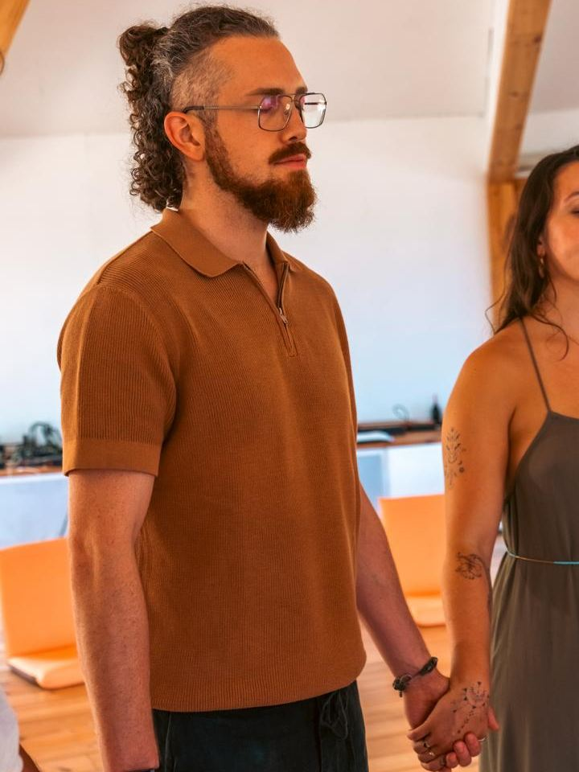
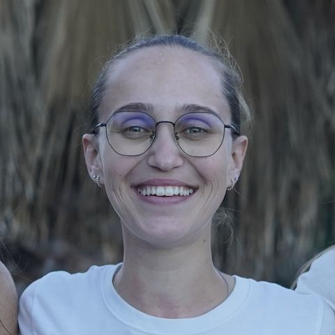
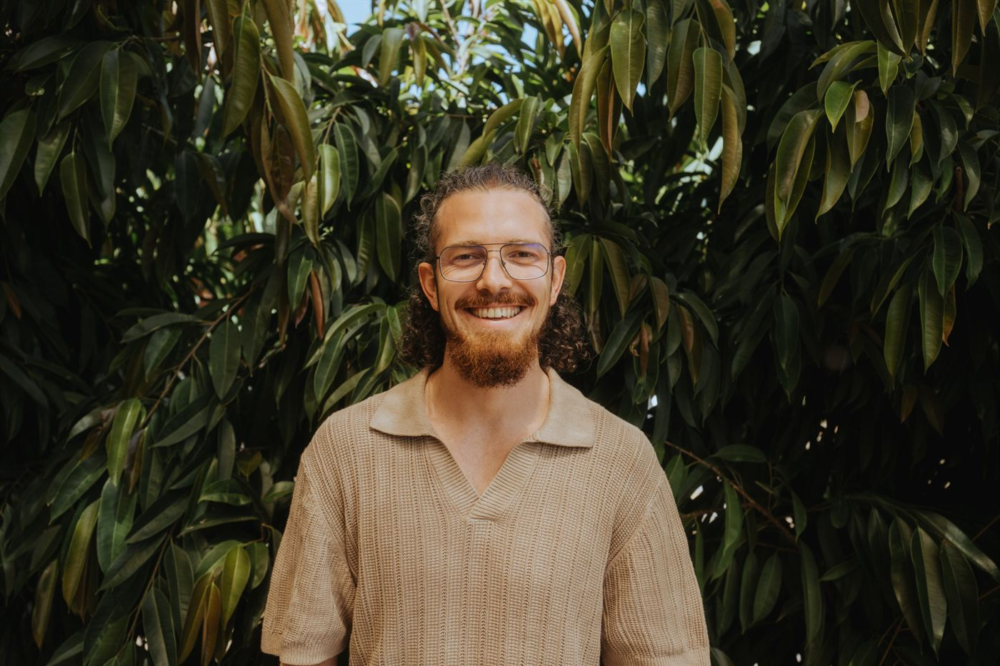
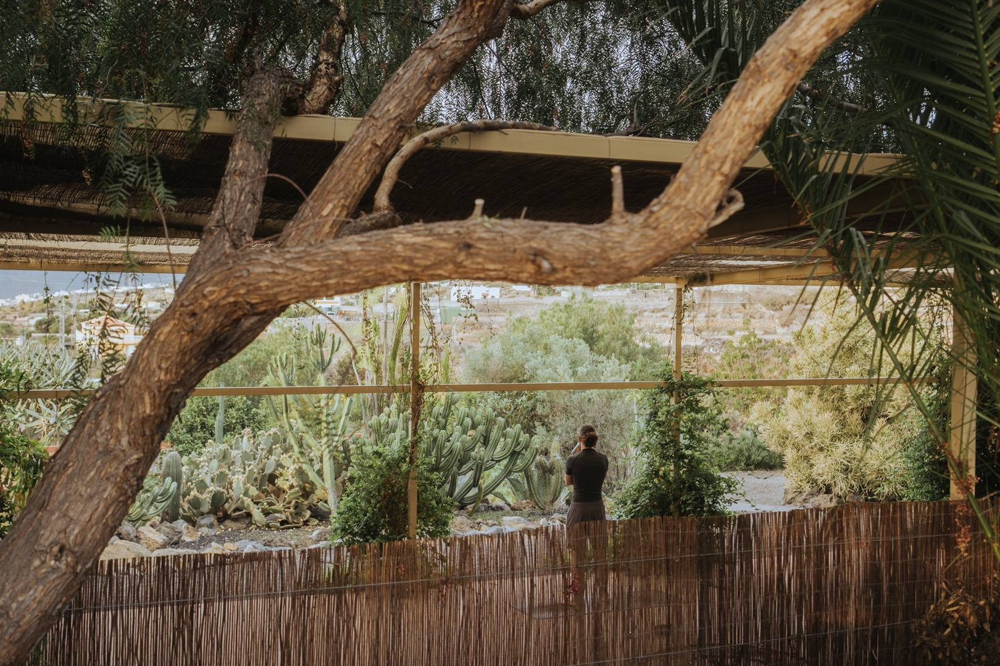

Einzelbegleitung
Mehrere Monate an deiner Seite — für alle, die nach dem Monat tiefer gehen wollen.
Das ist keine Schwäche. Das ist Scham — und sie tut nur ihren alten Job: dich schützen. Sie darf jetzt etwas Neues lernen.
Vier Wochen 1:1 mit mir: eine tiefe Emotional-Release-Session, Integration und Check-ins, bis das Neue in deinem Alltag ankommt.
Mehrere Monate an deiner Seite — für alle, die nach dem Monat tiefer gehen wollen.

Ein paar Tage in der Gruppe: atmen, fühlen, tanzen — und merken, dass du nicht allein bist.
„Es war eine der besten Entscheidungen meines Lebens.“
Mein erstes Wort nach unserer 1:1-Session war „Verrückt!“. Es ist wirklich verrückt, was alles möglich ist und wie sehr ich mich selbst immer weiter kennenlernen darf. Es „verrückt“ meine Ansichten und verändert mein Leben.
Franz öffnet für mich einen sicheren Raum, in dem all das möglich wird. Einfach nur danke!

Hol es dir kostenlos, und du bekommst direkt Zugang zu meiner Emotional-Release-Meditation:
Ohne dich kleinzumachen. Ohne zu erklären, warum du so fühlst, wie du fühlst. Mit allem, wofür du dich bisher geschämt hast. Genau dorthin begleite ich dich.
„Dieser urteilsfreie Raum mit Franz ist unglaublich wertvoll und wichtig für mich.“
Es fühlt sich unbeschreiblich schön an, in meinen Emotionen gesehen und gehalten zu werden — dadurch fühle ich mich sicher und wohl. Durch unsere Zusammenarbeit habe ich viel mehr Akzeptanz für mich selbst entwickelt.
Es ist krass, dass alles bereits in mir steckt und ich nur jemanden brauche, der mir hilft, das zu erkennen — den Menschen, der ich wirklich bin und immer war.
DANKE, dass du diesen Raum für mich hältst! Ich sage es jedes Mal wieder: Es ist so wertvoll, darin gesehen und geführt zu werden.

Kleinmachen, verstecken, gegen das eigene Gefühl anarbeiten — das war jahrelang mein Normalzustand. Heute begleite ich Menschen genau dorthin, wo es weich wird.

„Ich fühle mich stärker denn je und bin unfassbar stolz auf mich.“
Vom ersten Call an habe ich mich komplett verstanden und zu 111 % gesehen gefühlt. Dadurch konnte ich in der Session endlich loslassen. Statt „Schatten“ oder „Limitationen“ durfte ich das kleine, verängstigte Mädchen dahinter sehen. Da gibt es nichts zu transformieren, sondern zu INTEGRIEREN und in den Arm zu nehmen.
„Bei jeder Session ist ein kleiner Knoten geplatzt. Diesmal ein GROSSER.“
Ich weiß jetzt, wie ich meine Wut fühlen und vor allem zum Ausdruck bringen kann. Meine Energie und meine Motivation kommen zurück. Ich will nicht mehr in der Opferrolle sein. Ich nehme es wieder in die Hand.
45 Minuten, kostenlos und unverbindlich. Danach weißt du, ob dein UnVerschämt-Monat jetzt dran ist.
Emotional Release ist Prozess- und Persönlichkeitsarbeit — keine Therapie und kein Heilversprechen. In akuten Krisen: Notruf 112 · Telefonseelsorge 0800 111 0 111.